Opening. This is a technical deep dive on Microsoft's Digital-Work Platform. Conceptual, logical, physical, then the integrations and the AI path.
Slide 1: Intro
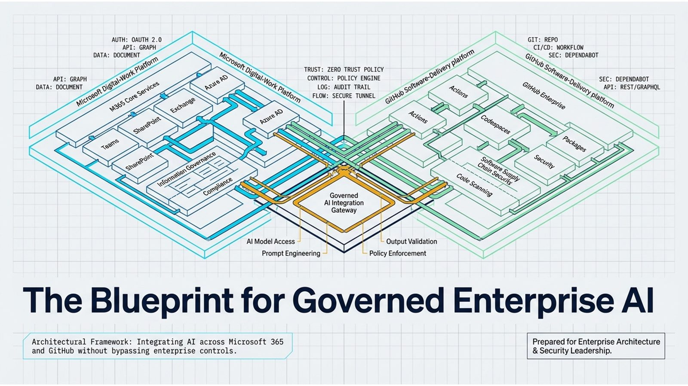
Microsoft's Digital-Work Platform is really two platforms wired through one governed AI orchestration boundary: the M365 digital-work side and the GitHub software-delivery side, meeting at a Governed AI Integration Gateway that enforces zero-trust policy, audit trail, and a secure tunnel between them.
Slide 2: Governed consumer, not a bypass
Sprawl is Copilot calling ITSM, CRM, and HR systems directly; governance routes those same calls through one shared Integration Enablement Layer of APIs, event streams, identity, and connectors. This is the single architectural choice the whole pack is built around — everything else is a consequence of getting this one right.
Example: The same three downstream systems appear in both diagrams; only the path Copilot takes to reach them changes.
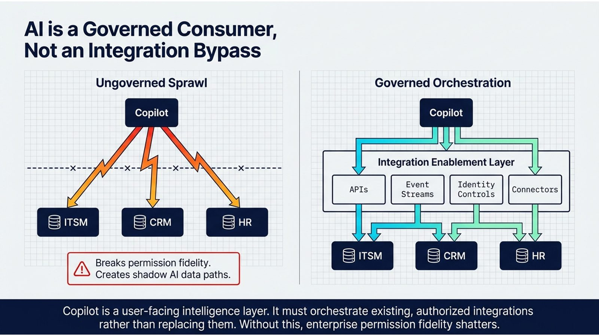
The core architectural rule sits right here. Ungoverned sprawl lets Copilot punch its own holes straight to ITSM, CRM, and HR systems, breaking permission fidelity and creating shadow AI data paths. Governed orchestration routes every one of those same calls through a shared Integration Enablement Layer of APIs, event streams, identity controls, and connectors instead.
Slide 3: Two platforms, one strategy
M365 Copilot and GitHub Copilot each sit natively over their own platform, but third-party data and actions must cross the boundary through governed APIs, MCP, and federated identity. Keeping orchestration native to each platform avoids building a third, ungoverned layer just to bridge them.
Example: A GitHub Copilot agent doesn't call Salesforce directly — it goes through the same governed boundary an M365 Copilot call would.
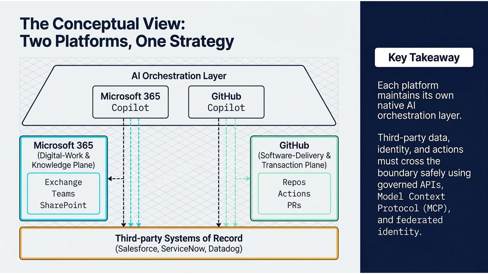
At the conceptual level, each platform keeps its own native AI orchestration layer — M365 Copilot over the knowledge plane, GitHub Copilot over the transaction plane — but third-party data, identity, and actions can only cross that platform boundary through governed APIs, Model Context Protocol, and federated identity.
Slide 4: The AI data path
Microsoft Purview and Entra evaluation — conditional access, sensitivity labels, permission trimming, and DLP — sits directly in the path between grounding data fetch and response generation. This is the specific, named control the conceptual view's 'permission fidelity' principle cashes out to in practice.
Example: Copilot cannot retrieve what the user cannot natively access — the access check happens in the data path itself, not as an afterthought.
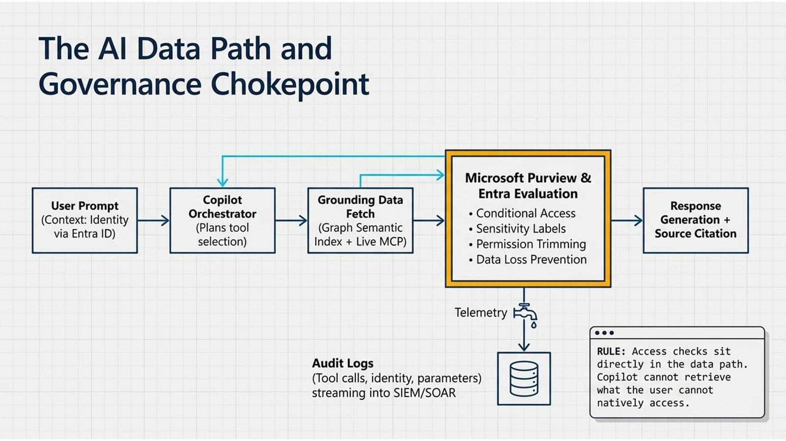
This is the pack's core subject: the AI data path doubles as the governance chokepoint. A user prompt carries identity via Entra ID, the Copilot orchestrator plans tool selection, grounding data is fetched, and Microsoft Purview and Entra evaluation applies conditional access, sensitivity labels, permission trimming, and DLP before any response is generated — with every tool call streamed to audit logs regardless of outcome.
Slide 5: Mapping the surfaces
Graph API and GitHub's REST/GraphQL/webhooks are each platform-specific; MCP servers are the one extensibility mechanism shared across both. A shared standard is what makes a single governance layer possible instead of two disconnected ones.
Example: The same MCP catalog entry pattern governs a Datadog tool call from GitHub Copilot and a ServiceNow tool call from M365 Copilot.
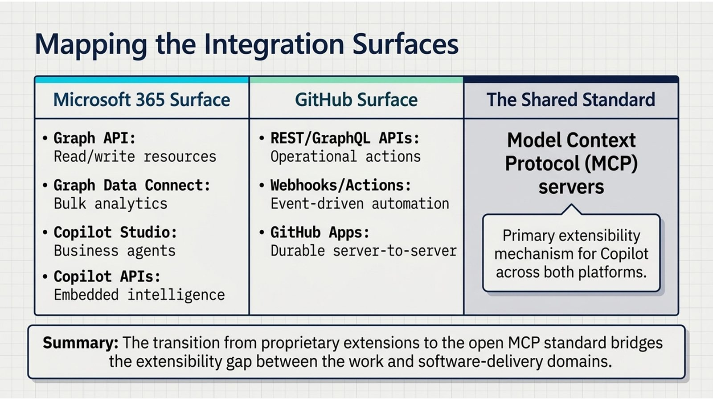
Zooming out, the two platforms expose parallel integration surfaces — Graph API and Copilot Studio on the M365 side, REST, GraphQL, webhooks, and GitHub Apps on the GitHub side — but Model Context Protocol servers are the shared standard that bridges both: the primary extensibility mechanism for Copilot across either domain.
Slide 6: Synced vs. federated
Synced connectors index durable, broadly-searchable knowledge; federated MCP connectors fetch dynamic, sensitive, or too-large-to-duplicate data live, with nothing persisted. This is the architectural decision the mind-map intake called 'often simple' — but getting it backwards either stales sensitive data or fails to make static knowledge searchable.
Example: A knowledge-base article syncs; a live incident ticket number does not.
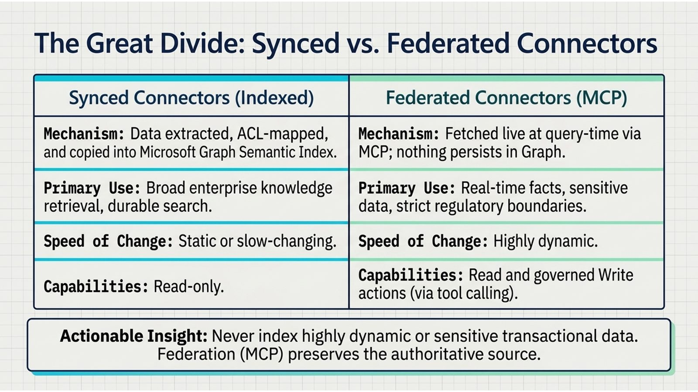
Within that shared standard there's a hard architectural fork. Synced connectors extract, ACL-map, and copy data into the Graph semantic index for broad, durable, read-only search. Federated MCP connectors fetch live at query time with nothing persisted, built for real-time facts, sensitive data, and strict regulatory boundaries — and federation is what preserves the authoritative source.
Slide 7: Building synced connectors
ACL mapping — translating source-system entitlements precisely into the M365 Entra ID user context, before indexing. A connector that indexes content correctly but maps permissions imprecisely doesn't just misfile data — it amplifies an existing exposure risk.
Example: If a source system's 'restricted' folder maps to a broader M365 group than intended, that mistake is now searchable enterprise-wide.
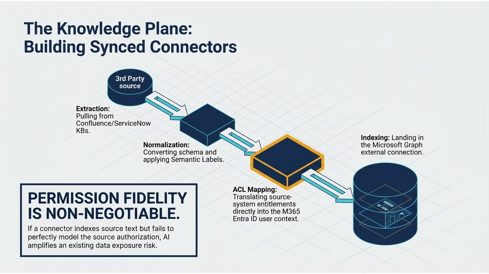
Building a synced connector is a four-step pipeline: extract from the third-party source, normalize the schema and apply semantic labels, map the source system's entitlements precisely into the Entra ID user context, and only then index into Graph. If that ACL mapping step is imperfect, the connector doesn't just index bad data — it amplifies an existing exposure risk.
Slide 8: Federated live fetch
The MCP gateway evaluates policy, authenticates, fetches live data, and returns it with a citation — with an explicit zero-persistence guarantee to Graph. This is the mechanism, not just the claim, behind why federation is the right choice for regulated or fast-changing data.
Example: Asking Copilot for a live incident status returns an answer with a citation, but nothing about that incident becomes newly searchable in Graph afterward.
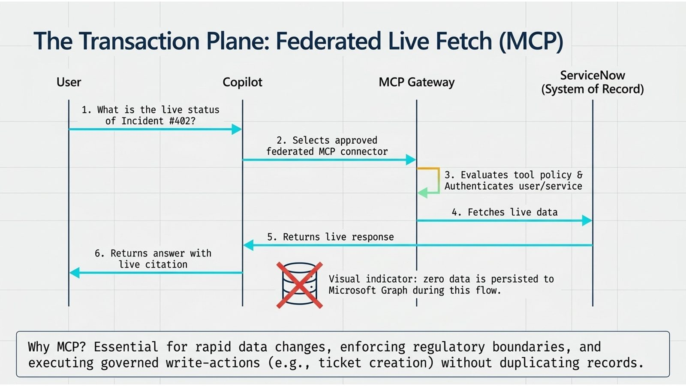
Federated fetch looks different end to end. A user asks about a live ServiceNow incident, Copilot selects the approved MCP connector, the MCP gateway evaluates tool policy and authenticates the caller, fetches live data, and returns an answer with a live citation — with the explicit guarantee that zero data is persisted to Graph during that flow.
Slide 9: GitHub identity and tools
GitHub Apps use fine-grained, short-lived tokens by default; PATs are flagged to avoid for durable enterprise integrations. This is a concrete, checkable control rather than a general best-practice platitude — and it's dated by GitHub Copilot Extensions' deprecation in favor of MCP.
Example: A long-lived PAT baked into a CI pipeline is exactly the kind of durable server-to-server case GitHub Apps exist to replace.
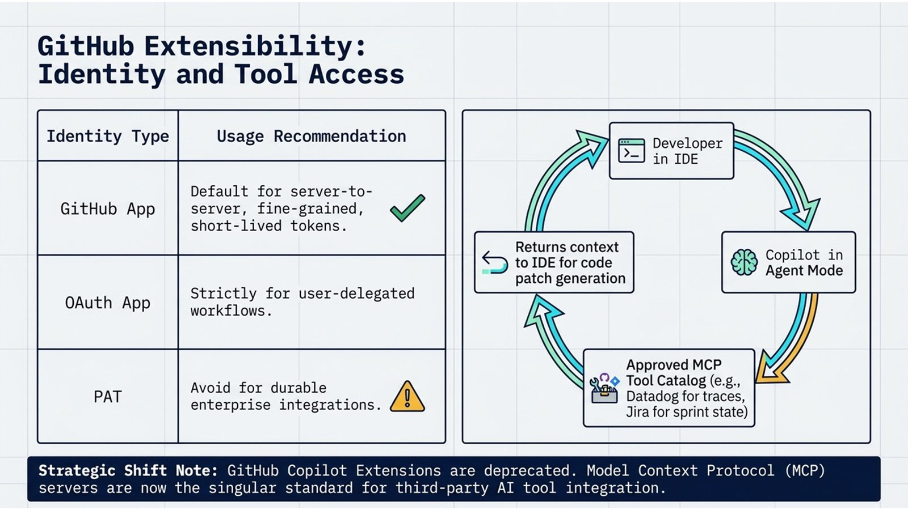
On the GitHub side, identity choice is the control: GitHub Apps with fine-grained, short-lived tokens are the default for server-to-server work, OAuth apps are reserved strictly for user-delegated flows, and personal access tokens are flagged to avoid for durable enterprise integrations — with GitHub Copilot Extensions deprecated in favor of MCP servers as the single standard.
Slide 10: APIs govern, AI accelerates
The fragile way has Copilot try to coordinate scan, approval, and merge itself; the durable way keeps webhooks, SAST, change management, and the Checks API as the system of record. This is the clearest concrete instance of the pack's broader rule: AI accelerates, event/API integrations govern state.
Example: A merge gated by the Checks API is auditable after the fact in a way a merge Copilot 'decided' to make is not.
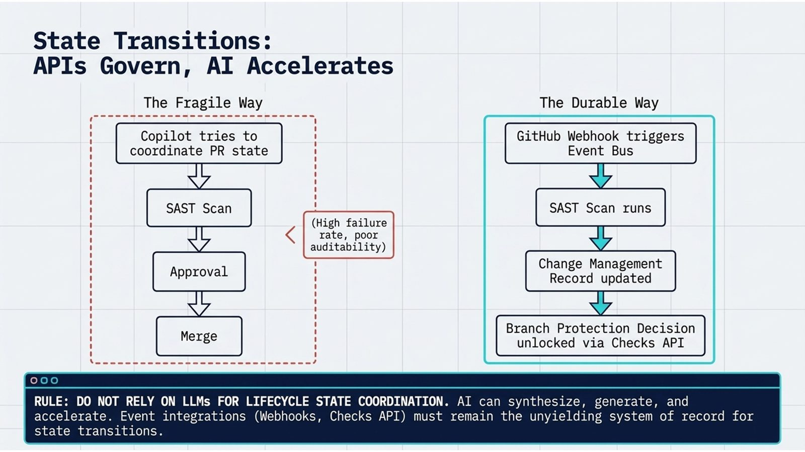
State transitions draw the clearest line in the whole pack. The fragile way lets Copilot itself try to coordinate PR state through approval and merge — high failure rate, poor auditability. The durable way keeps a GitHub webhook triggering an event bus, a SAST scan, a change-management record, and a Checks API decision as the unyielding system of record, with AI accelerating but never owning that lifecycle.
Slide 11: Bridging the domains
A knowledge bridge lets M365 Search surface GitHub engineering docs; a delivery bridge lets M365 webhooks mirror controls back to GitHub Checks — but SharePoint and GitHub each keep their own authoritative content. Bridging visibility across platforms is not the same as merging their systems of record, and conflating the two is a design mistake this pack explicitly warns against.
Example: A PM can find an ADR written in GitHub through M365 Search without that ADR's authoritative copy ever moving to SharePoint.
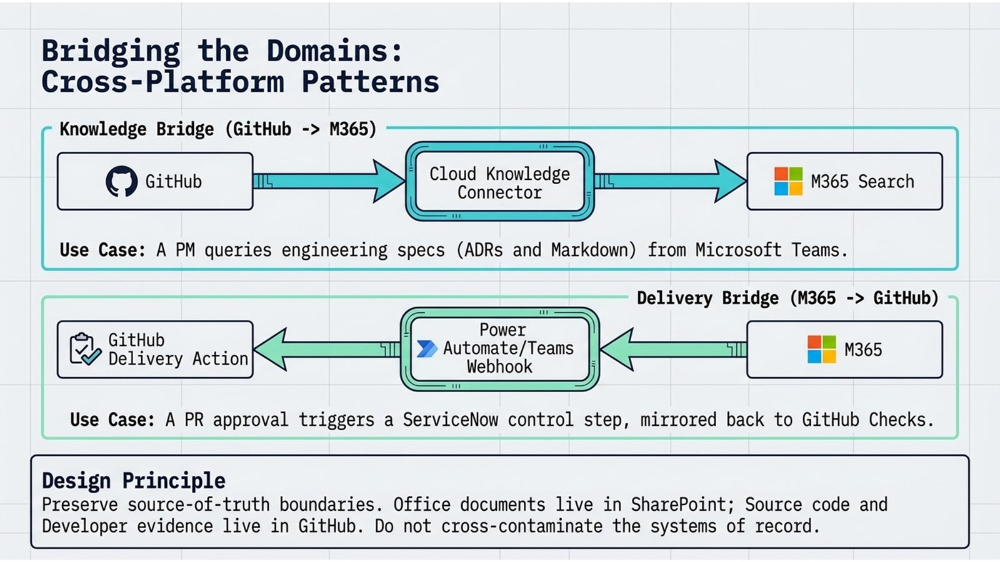
Cross-platform patterns run in both directions with one design principle underneath: a knowledge bridge lets a PM query GitHub engineering specs from M365 Search, a delivery bridge lets an M365 webhook mirror a control step back to GitHub Checks — but Office documents stay in SharePoint and source code stays in GitHub, because the two systems of record must never cross-contaminate.
Slide 12: Trust boundaries
Deploy, delete, and transmit actions must bind to verified identity and require workflow approval — never be triggered by a natural-language request alone. This is the governance checkpoint that ties identity, data, and MCP controls together into a single enforceable rule.
Example: Copilot drafting a delete request is fine; Copilot executing that delete on a natural-language 'yes, go ahead' without a bound approval step is exactly what this rule blocks.
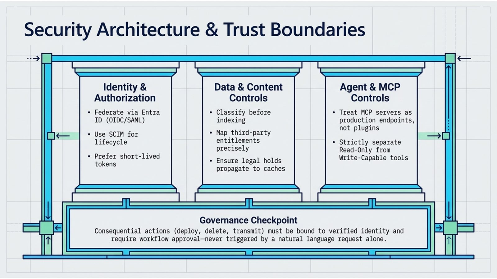
Security architecture rests on three pillars: identity and authorization federated through Entra ID with SCIM lifecycle and short-lived tokens, data and content controls that classify before indexing and propagate legal holds, and agent and MCP controls that treat MCP servers as production endpoints, not plugins, strictly separating read-only from write-capable tools — all gated by one governance checkpoint: consequential actions must bind to verified identity and workflow approval, never a natural-language request alone.
Slide 13: The decision framework
First ask what the system of record is and refuse to duplicate it, then check durability of search need, data dynamism/sensitivity, and whether the integration changes state. This decision framework is the pack's practical synthesis of every view before it — conceptual, logical, and physical distinctions collapse into four sequential questions.
Example: A request to 'make Jira sprint state searchable in Copilot' should route to a federated MCP connector, not a synced one, because sprint state is highly dynamic.
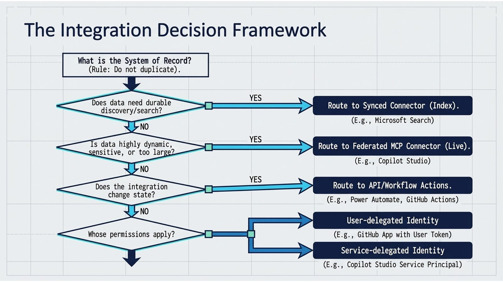
All of this collapses into one decision framework. Ask what the system of record is and never duplicate it; if data needs durable search, route to a synced connector; if it's dynamic or sensitive, route to a federated MCP connector; if the integration changes state, route to API or workflow actions; and always resolve whose permissions apply — user-delegated or service-delegated identity.
Slide 14: The target state
AI/Copilot experiences sit on top of one Integration Enablement Layer (MCP gateway, API gateway, catalog, policy, audit, schema registry), which feeds a knowledge plane and a transaction plane that both terminate in real enterprise systems of record. This is the architecture every other slide has been building toward — the point where governance is centralized without AI productivity being blocked.
Example: The same enablement layer that gates a Copilot Studio agent's ITSM ticket creation also gates a GitHub Copilot agent's PR-triggered ServiceNow update.
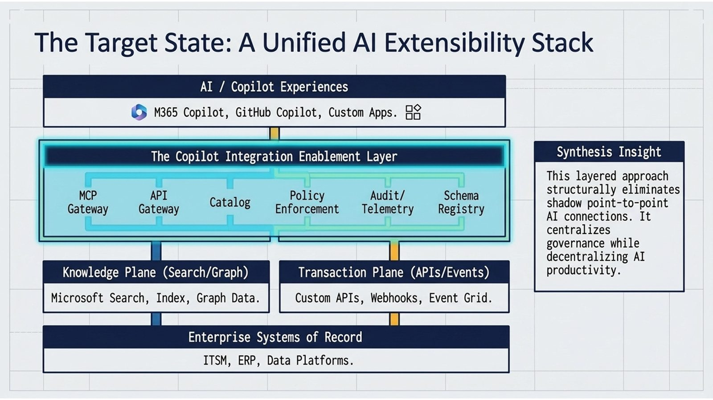
The target state stacks cleanly: AI and Copilot experiences on top, the Copilot Integration Enablement Layer underneath as MCP gateway, API gateway, catalog, policy enforcement, audit, and schema registry, feeding a knowledge plane and a transaction plane that both terminate in the actual enterprise systems of record — centralizing governance while decentralizing AI productivity.
Slide 15: The strategic ask
Never duplicate a system of record just to make it AI accessible — govern access to it instead. Every failure mode in this pack, from oversharing to shadow AI sprawl, traces back to violating this one rule.
Example: Copying a CRM's records into a new AI-searchable store to 'make Copilot smarter' is precisely the shortcut this rule forbids.
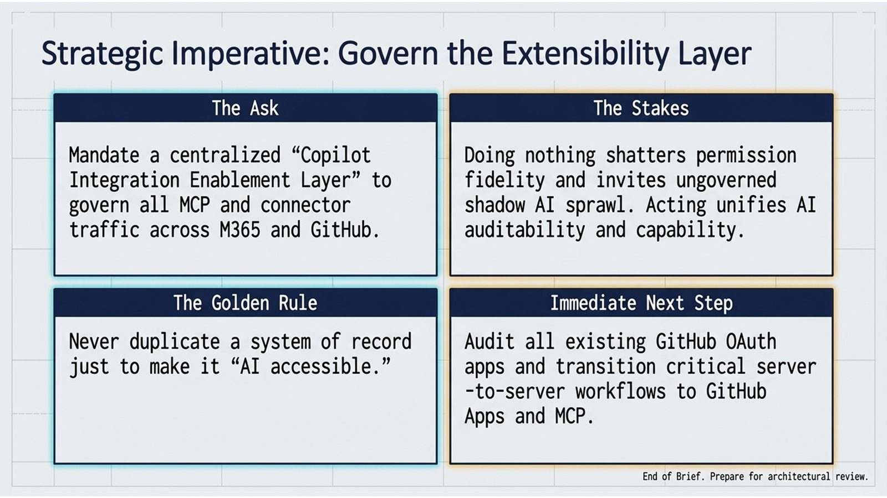
The strategic imperative is to mandate that centralized Integration Enablement Layer across both platforms, on one golden rule: never duplicate a system of record just to make it AI accessible — because doing nothing here doesn't stay neutral, it shatters permission fidelity and invites ungoverned shadow AI sprawl.
Recap
Copilot on either platform is a governed consumer of existing integration, identity, and control architecture — never a bypass around it — and the single shared chokepoint that keeps it that way is the Integration Enablement Layer.
Close
Thank you. Draw the three views from memory. If you can, you have it.
Watch the cut on the Deck and deep-dive cut page.